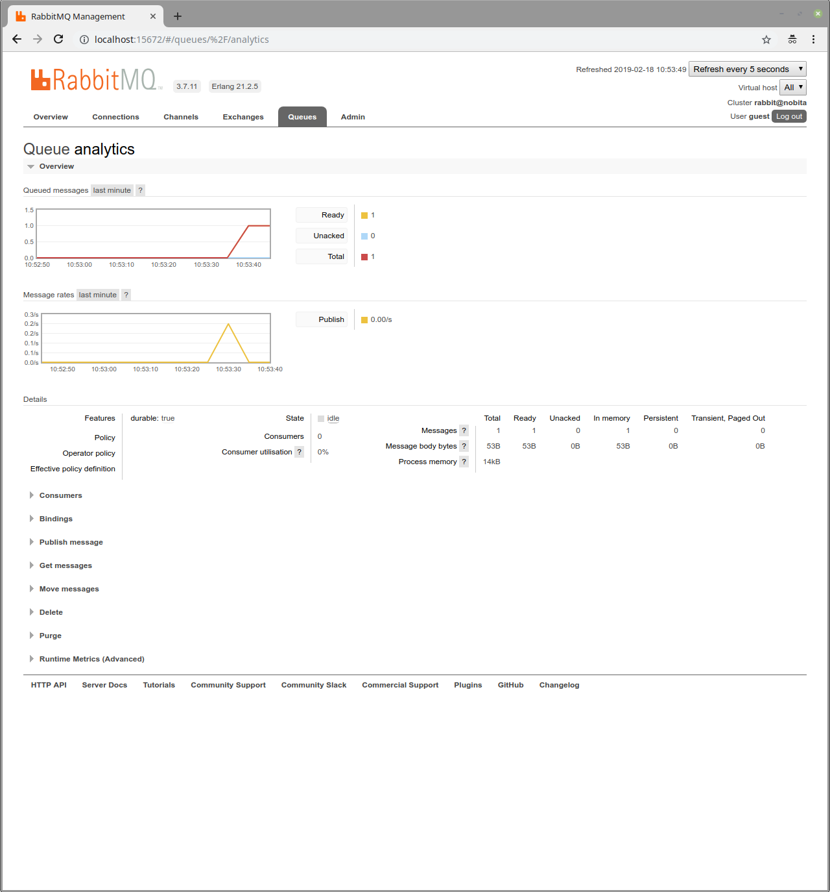
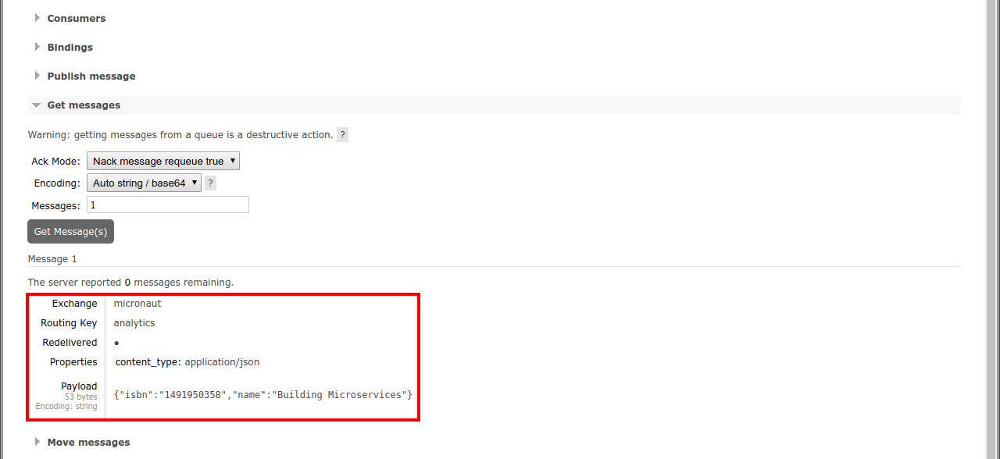
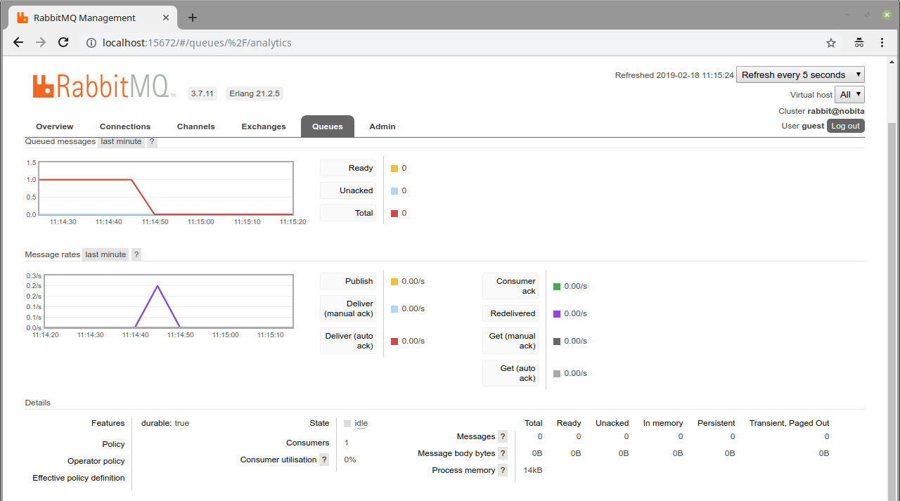

mn create-app --features=rabbitmq,reactor,graalvm example.micronaut.books --build=gradle --lang=javaRabbitMQ and the Micronaut Framework - Event-Driven Applications
Use RabbitMQ to communicate between your Micronaut applications.
Authors: Iván López
Micronaut Version: 4.9.1
1. Getting Started
In this guide, we will create a Micronaut application written in Java.
In this guide, we will create two microservices that will use RabbitMQ to communicate with each other in an asynchronous and decoupled way.
RabbitMQ is an open-source message-broker software that originally implemented the Advanced Message Queuing Protocol (AMQP) and has since been extended with a plug-in architecture to support Streaming Text Oriented Messaging Protocol (STOMP), Message Queuing Telemetry Transport (MQTT), and other protocols.
2. What you will need
To complete this guide, you will need the following:
-
Some time on your hands
-
A decent text editor or IDE (e.g. IntelliJ IDEA)
-
JDK 21 or greater installed with
JAVA_HOMEconfigured appropriately
3. Solution
We recommend that you follow the instructions in the next sections and create the application step by step. However, you can go right to the completed example.
-
Download and unzip the source
4. Writing the application
Let’s describe the microservices you will build through the guide.
-
books- It returns a list of books. It uses a domain consisting of a book name and ISBN. It also publishes a message in RabbitMQ every time a book is accessed. -
analytics- It connects to RabbitMQ to update the analytics for every book (a counter). It also exposes an endpoint to get the analytics.
4.1. Books microservice
Create the books microservice using the Micronaut Command Line Interface or with Micronaut Launch.
If you don’t specify the --build argument, Gradle with the Kotlin DSL is used as the build tool. If you don’t specify the --lang argument, Java is used as the language.If you don’t specify the --test argument, JUnit is used for Java and Kotlin, and Spock is used for Groovy.
|
If you use Micronaut Launch, select Micronaut Application as application type and add the rabbitmq, reactor, and graalvm features.
The previous command creates a directory named books and a Micronaut application inside it with default package example.micronaut.
Create a BookController class to handle incoming HTTP requests into the books microservice:
books/src/main/java/example/micronaut/BookController.java
package example.micronaut;
import io.micronaut.http.annotation.Controller;
import io.micronaut.http.annotation.Get;
import java.util.List;
import java.util.Optional;
@Controller("/books") (1)
public class BookController {
private final BookService bookService; (2)
public BookController(BookService bookService) {
this.bookService = bookService;
}
@Get (3)
public List<Book> listAll() {
return bookService.listAll();
}
@Get("/{isbn}") (4)
Optional<Book> findBook(String isbn) {
return bookService.findByIsbn(isbn);
}
}| 1 | The class is defined as a controller with the @Controller annotation mapped to the path /books. |
| 2 | Inject BookService using constructor injection. |
| 3 | The @Get annotation maps the listAll method to an HTTP GET request on /books. |
| 4 | The @Get annotation maps the findBook method to an HTTP GET request on /books/{isbn}. |
The previous controller responds a List<Book>. Create the Book POJO:
books/src/main/java/example/micronaut/Book.java
package example.micronaut;
import io.micronaut.core.annotation.Creator;
import io.micronaut.serde.annotation.Serdeable;
import java.util.Objects;
@Serdeable
public class Book {
private final String isbn;
private final String name;
@Creator
public Book(String isbn, String name) {
this.isbn = isbn;
this.name = name;
}
public String getIsbn() {
return isbn;
}
public String getName() {
return name;
}
@Override
public String toString() {
return "Book{" +
"isbn='" + isbn + '\'' +
", name='" + name + '\'' +
'}';
}
@Override
public boolean equals(Object o) {
if (this == o) return true;
if (o == null || getClass() != o.getClass()) return false;
Book other = (Book) o;
return Objects.equals(isbn, other.isbn) &&
Objects.equals(name, other.name);
}
@Override
public int hashCode() {
return Objects.hash(isbn, name);
}
}To keep this guide simple there is no database persistence, and the list of books is kept in memory in BookService:
books/src/main/java/example/micronaut/BookService.java
package example.micronaut;
import jakarta.annotation.PostConstruct;
import jakarta.inject.Singleton;
import java.util.ArrayList;
import java.util.List;
import java.util.Optional;
@Singleton
public class BookService {
private static final List<Book> bookStore = new ArrayList<>();
@PostConstruct
void init() {
bookStore.add(new Book("1491950358", "Building Microservices"));
bookStore.add(new Book("1680502395", "Release It!"));
bookStore.add(new Book("0321601912", "Continuous Delivery"));
}
public List<Book> listAll() {
return bookStore;
}
public Optional<Book> findByIsbn(String isbn) {
return bookStore.stream()
.filter(b -> b.getIsbn().equals(isbn))
.findFirst();
}
}4.2. Analytics microservice
Create the analytics microservice using the Micronaut Command Line Interface or with Micronaut Launch.
mn create-app --features=rabbitmq,graalvm example.micronaut.analytics --build=gradle --lang=java
If you don’t specify the --build argument, Gradle with the Kotlin DSL is used as the build tool. If you don’t specify the --lang argument, Java is used as the language.If you don’t specify the --test argument, JUnit is used for Java and Kotlin, and Spock is used for Groovy.
|
If you use Micronaut Launch, select Micronaut Application as application type and add the kafka and graalvm features.
To keep this guide simple there is no database persistence, and the books analytics is kept in memory in AnalyticsService:
analytics/src/main/java/example/micronaut/AnalyticsService.java
package example.micronaut;
import jakarta.inject.Singleton;
import java.util.List;
import java.util.Map;
import java.util.concurrent.ConcurrentHashMap;
import java.util.stream.Collectors;
@Singleton
public class AnalyticsService {
private final Map<Book, Long> bookAnalytics = new ConcurrentHashMap<>(); (1)
public void updateBookAnalytics(Book book) { (2)
bookAnalytics.compute(book, (b, v) -> {
return v == null ? 1L : v + 1;
});
}
public List<BookAnalytics> listAnalytics() { (3)
return bookAnalytics
.entrySet()
.stream()
.map(e -> new BookAnalytics(e.getKey().getIsbn(), e.getValue()))
.collect(Collectors.toList());
}
}| 1 | Keep the books analytics in memory. |
| 2 | Initialize and update the analytics for the book passed as parameter. |
| 3 | Return all the analytics. |
Create the Book POJO used by AnalyticsService:
analytics/src/main/java/example/micronaut/Book.java
package example.micronaut;
import io.micronaut.core.annotation.Creator;
import io.micronaut.serde.annotation.Serdeable;
import java.util.Objects;
@Serdeable
public class Book {
private final String isbn;
private final String name;
@Creator
public Book(String isbn, String name) {
this.isbn = isbn;
this.name = name;
}
public String getIsbn() {
return isbn;
}
public String getName() {
return name;
}
@Override
public String toString() {
return "Book{" +
"isbn='" + isbn + '\'' +
", name='" + name + '\'' +
'}';
}
@Override
public boolean equals(Object o) {
if (this == o) return true;
if (o == null || getClass() != o.getClass()) return false;
Book other = (Book) o;
return Objects.equals(isbn, other.isbn) &&
Objects.equals(name, other.name);
}
@Override
public int hashCode() {
return Objects.hash(isbn, name);
}
}The previous service responds a List<BookAnalytics>. Create the BookAnalytics POJO:
analytics/src/main/java/example/micronaut/BookAnalytics.java
package example.micronaut;
import io.micronaut.core.annotation.Creator;
import io.micronaut.serde.annotation.Serdeable;
@Serdeable
public class BookAnalytics {
private final String bookIsbn;
private final long count;
@Creator
public BookAnalytics(String bookIsbn, long count) {
this.bookIsbn = bookIsbn;
this.count = count;
}
public String getBookIsbn() {
return bookIsbn;
}
public long getCount() {
return count;
}
}Write a test:
analytics/src/test/java/example/micronaut/AnalyticsServiceTest.java
package example.micronaut;
import static org.junit.jupiter.api.Assertions.assertEquals;
import io.micronaut.test.extensions.junit5.annotation.MicronautTest;
import org.junit.jupiter.api.Test;
import jakarta.inject.Inject;
import java.util.List;
@MicronautTest (1)
public class AnalyticsServiceTest {
@Inject (2)
AnalyticsService analyticsService;
@Test
void testUpdateBookAnalyticsAndGetAnalytics() {
Book b1 = new Book("1491950358", "Building Microservices");
Book b2 = new Book("1680502395", "Release It!");
analyticsService.updateBookAnalytics(b1);
analyticsService.updateBookAnalytics(b1);
analyticsService.updateBookAnalytics(b1);
analyticsService.updateBookAnalytics(b2);
List<BookAnalytics> analytics = analyticsService.listAnalytics();
assertEquals(2, analytics.size());
assertEquals(3, findBookAnalytics(b1, analytics).getCount());
assertEquals(1, findBookAnalytics(b2, analytics).getCount());
}
private BookAnalytics findBookAnalytics(Book b, List<BookAnalytics> analytics) {
return analytics
.stream()
.filter(bookAnalytics -> bookAnalytics.getBookIsbn().equals(b.getIsbn()))
.findFirst()
.orElseThrow(() -> new RuntimeException("Book not found"));
}
}| 1 | micronaut-test-junit5 is added automatically to build.gradle (or pom.xml) when creating an application with the CLI. For more information, see the documentation. |
| 2 | Just inject the collaborator and @MicronautTest will take care of everything. |
Create a Controller to expose the analytics:
analytics/src/main/java/example/micronaut/AnalyticsController.java
package example.micronaut;
import io.micronaut.http.annotation.Controller;
import io.micronaut.http.annotation.Get;
import java.util.List;
@Controller("/analytics")
public class AnalyticsController {
private final AnalyticsService analyticsService;
public AnalyticsController(AnalyticsService analyticsService) {
this.analyticsService = analyticsService;
}
@Get(1)
public List<BookAnalytics> listAnalytics() {
return analyticsService.listAnalytics();
}
}| 1 | Just expose the analytics. |
|
The application doesn’t expose the method |
To run the tests:
analytics
./gradlew testModify the Application class to use dev as a default environment:
The Micronaut framework supports the concept of one or many default environments. A default environment is one that is only applied if no other environments are explicitly specified or deduced.
analytics/src/main/java/example/micronaut/Application.java
package example.micronaut;
import io.micronaut.runtime.Micronaut;
import static io.micronaut.context.env.Environment.DEVELOPMENT;
public class Application {
public static void main(String[] args) {
Micronaut.build(args)
.mainClass(Application.class)
.defaultEnvironments(DEVELOPMENT)
.start();
}
}Create src/main/resources/application-dev.properties. The Micronaut framework applies this configuration file only for the dev environment.
analytics/src/main/resources/application-dev.properties
(1)
micronaut.server.port=8081| 1 | Start the analytics microservice on port 8081. |
5. Test Resources
When the application is started locally — either under test or by running the application — resolution of the rabbitmq.uri property is detected and the Test Resources service will start a local RabbitMQ docker container, and inject the properties required to use this as the message broker.
When running under production, you should replace this property with the location of your production message broker via an environment variable.
RABBITMQ_URI=amqp://production-server:5672For more information, see the RabbitMQ section of the Test Resources documentation.
6. Running the application
Run the books microservice:
books
./gradlew run16:35:55.614 [main] INFO io.micronaut.runtime.Micronaut - Startup completed in 576ms. Server Running: http://localhost:8080Run analytics microservice:
analytics
./gradlew run16:35:55.614 [main] INFO io.micronaut.runtime.Micronaut - Startup completed in 623ms. Server Running: http://localhost:8081You can run curl commands to test the application:
curl http://localhost:8080/books[{"isbn":"1491950358","name":"Building Microservices"},{"isbn":"1680502395","name":"Release It!"},{"isbn":"0321601912","name":"Continuous Delivery"}]curl http://localhost:8080/books/1491950358{"isbn":"1491950358","name":"Building Microservices"}curl http://localhost:8081/analytics[]Please note that getting the analytics returns an empty list because the applications are not communicating to each other (yet).
6.1. Books microservice
Via Test Resources the Micronaut application will connect to a RabbitMQ instance running inside Docker so it is not necessary to add anything to application.properties.
In case you want to change the configuration, add the following:
books/src/main/resources/application-prod.properties
rabbitmq.uri=amqp://rabbitmq-server:56726.1.1. Create RabbitMQ exchange, queue and binding
Before being able to send and receive messages using RabbitMQ it is necessary to define the exchange, queue and binding. One option is create them directly in the RabbitMQ Admin UI available on port 15672.
Use guest for both username and password.
|
Another option is to create them programmatically.
Create the class ChannelPoolListener:
books/src/main/java/example/micronaut/ChannelPoolListener.java
package example.micronaut;
import com.rabbitmq.client.BuiltinExchangeType;
import com.rabbitmq.client.Channel;
import io.micronaut.rabbitmq.connect.ChannelInitializer;
import jakarta.inject.Singleton;
import java.io.IOException;
@Singleton
public class ChannelPoolListener extends ChannelInitializer {
@Override
public void initialize(Channel channel, String name) throws IOException {
channel.exchangeDeclare("micronaut", BuiltinExchangeType.DIRECT, true); (1)
channel.queueDeclare("analytics", true, false, false, null); (2)
channel.queueBind("analytics", "micronaut", "analytics"); (3)
}
}| 1 | Define an exchange named micronaut. From the producer point of view everything is sent to the exchange with the appropriate routing key |
| 2 | Define a queue named analytics. The consumer will listen for messages in that queue. |
| 3 | Define a binding between the exchange and the queue using the routing key analytics. |
6.1.2. Create RabbitMQ client (producer)
Let’s create an interface to send messages to RabbitMQ. The Micronaut framework will implement the interface at compilation time:
books/src/main/java/example/micronaut/AnalyticsClient.java
package example.micronaut;
import io.micronaut.rabbitmq.annotation.Binding;
import io.micronaut.rabbitmq.annotation.RabbitClient;
@RabbitClient("micronaut") (1)
public interface AnalyticsClient {
@Binding("analytics") (2)
void updateAnalytics(Book book); (3)
}| 1 | Set the exchange used to send the messages. |
| 2 | Set the routing key. |
| 3 | Send the Book POJO. The Micronaut framework will automatically convert it to JSON before sending it. |
6.1.3. Send Analytics information automatically
Sending a message to RabbitMQ is as simple as injecting AnalyticsClient and calling updateAnalytics method. The goal
is to do it automatically every time a book is returned, i.e., every time there is a call to http://localhost:8080/books/{isbn}.
To achieve this we will create an Http Server Filter.
Create the AnalyticsFilter class:
books/src/main/java/example/micronaut/AnalyticsFilter.java
package example.micronaut;
import io.micronaut.http.HttpRequest;
import io.micronaut.http.MutableHttpResponse;
import io.micronaut.http.annotation.Filter;
import io.micronaut.http.filter.HttpServerFilter;
import io.micronaut.http.filter.ServerFilterChain;
import reactor.core.publisher.Flux;
import reactor.core.publisher.Mono;
import org.reactivestreams.Publisher;
import java.util.Optional;
@Filter("/books/?*") (1)
public class AnalyticsFilter implements HttpServerFilter { (2)
private final AnalyticsClient analyticsClient; (3)
public AnalyticsFilter(AnalyticsClient analyticsClient) { (3)
this.analyticsClient = analyticsClient;
}
@Override
public Publisher<MutableHttpResponse<?>> doFilter(HttpRequest<?> request, ServerFilterChain chain) { (4)
return Flux
.from(chain.proceed(request)) (5)
.flatMap(response ->
Mono.fromCallable(() -> {
Optional<Book> book = response.getBody(Book.class); (6)
book.ifPresent(analyticsClient::updateAnalytics); (7)
return response;
})
);
}
}| 1 | Annotate the class with @Filter and define the ANT Matcher pattern to intercept all the calls to the desired URI. |
| 2 | The class needs to implement HttpServerFilter. |
| 3 | Constructor injection for RabbitMQ AnalyticsClient. |
| 4 | Override doFilter method. |
| 5 | Execute the request. This will call the controller action. |
| 6 | Get the response from the controller and return the body as a Book. |
| 7 | If the book is found, use RabbitMQ client to send a message. |
6.2. Analytics microservice
6.2.1. Create RabbitMQ exchange, queue and binding
As we already did in Books Microservice, let’s create the class ChannelPoolListener to define the exchange, queue
and binding:
analytics/src/main/java/example/micronaut/ChannelPoolListener.java
package example.micronaut;
import com.rabbitmq.client.BuiltinExchangeType;
import com.rabbitmq.client.Channel;
import io.micronaut.rabbitmq.connect.ChannelInitializer;
import jakarta.inject.Singleton;
import java.io.IOException;
@Singleton
public class ChannelPoolListener extends ChannelInitializer {
@Override
public void initialize(Channel channel, String name) throws IOException {
channel.exchangeDeclare("micronaut", BuiltinExchangeType.DIRECT, true);
channel.queueDeclare("analytics", true, false, false, null);
channel.queueBind("analytics", "micronaut", "analytics");
}
}| Instead of copy-paste the class in every project it would be better to create a new Gradle (or Maven) module and share it among all the microservices. |
6.2.2. Create RabbitMQ consumer
Create a new class to act as a consumer of the messages sent to RabbitMQ by the Books Microservice. The Micronaut framework will
implement the consumer at compile time. Create AnalyticsListener:
analytics/src/main/java/example/micronaut/AnalyticsListener.java
package example.micronaut;
import io.micronaut.rabbitmq.annotation.Queue;
import io.micronaut.rabbitmq.annotation.RabbitListener;
import io.micronaut.context.annotation.Requires;
import io.micronaut.context.env.Environment;
@Requires(notEnv = Environment.TEST) (1)
@RabbitListener (2)
public class AnalyticsListener {
private final AnalyticsService analyticsService; (3)
public AnalyticsListener(AnalyticsService analyticsService) { (3)
this.analyticsService = analyticsService;
}
@Queue("analytics") (4)
public void updateAnalytics(Book book) {
analyticsService.updateBookAnalytics(book); (5)
}
}| 1 | Do not load this bean for the test environment. This enable us to run the tests without having a RabbitMQ instance running. |
| 2 | Annotate the class with @RabbitListener to indicate that this bean will consume messages from RabbitMQ. |
| 3 | Constructor injection for AnalyticsService. |
| 4 | Annotate the method with @Queue. This listener will listen to messages in analytics queue. |
| 5 | Call the previously created method to update the analytics for the book. |
6.3. Running the application
Run books microservice:
books
./gradlew run16:35:55.614 [main] INFO io.micronaut.runtime.Micronaut - Startup completed in 576ms. Server Running: http://localhost:8080Execute a curl request to get one book:
curl http://localhost:8080/books/1491950358{"isbn":"1491950358","name":"Building Microservices"}Open RabbitMQ Admin UI on http://localhost:15672 and use guest for both username and password. Select queues and
analytics queue. You can see that there is a message in the queue.

Expand the "Get messages" option and get one message. You can see all the information: exchange, routing key, and the
`payload serialized to JSON:

Run analytics microservice:
analytics
./gradlew run16:35:55.614 [main] INFO io.micronaut.runtime.Micronaut - Startup completed in 623ms. Server Running: http://localhost:8081The application will consume and process the message automatically after the startup. Go to RabbitMQ Admin UI and check that the message has been consumed:

Now, run a curl to get the analytics:
curl http://localhost:8081/analytics[{"bookIsbn":"1491950358","count":1}]7. Generate a Micronaut Application Native Executable with GraalVM
We will use GraalVM, an advanced JDK with ahead-of-time Native Image compilation, to generate a native executable of this Micronaut application.
Compiling Micronaut applications ahead of time with GraalVM significantly improves startup time and reduces the memory footprint of JVM-based applications.
Only Java and Kotlin projects support using GraalVM’s native-image tool. Groovy relies heavily on reflection, which is only partially supported by GraalVM.
|
7.1. GraalVM Installation
Java 21
sdk install java 21.0.5-graalFor installation on Windows, or for a manual installation on Linux or Mac, see the GraalVM Getting Started documentation.
The previous command installs Oracle GraalVM, which is free to use in production and free to redistribute, at no cost, under the GraalVM Free Terms and Conditions.
Alternatively, you can use the GraalVM Community Edition:
Java 21
sdk install java 21.0.2-graalce7.2. Native Executable Generation
To generate a native executable using Gradle, run:
./gradlew nativeCompileThe native executable is created in build/native/nativeCompile directory and can be run with build/native/nativeCompile/micronautguide.
It is possible to customize the name of the native executable or pass additional parameters to GraalVM:
build.gradle
graalvmNative {
binaries {
main {
imageName.set('mn-graalvm-application') (1)
buildArgs.add('-Ob') (2)
}
}
}| 1 | The native executable name will now be mn-graalvm-application |
| 2 | It is possible to pass extra build arguments to native-image. For example, -Ob enables the quick build mode. |
Start the native executables for the two microservices and run the same curl request as before to check that everything works with GraalVM.
8. Next Steps
Read more about RabbitMQ support in the Micronaut framework.
9. License
| All guides are released with an Apache license 2.0 license for the code and a Creative Commons Attribution 4.0 license for the writing and media (images…). |